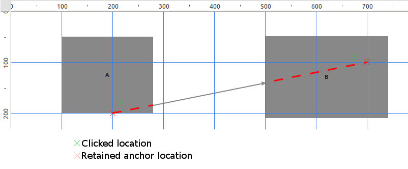
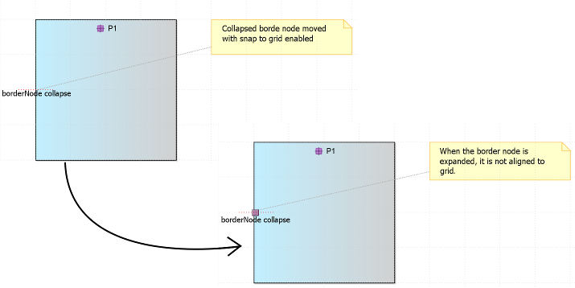
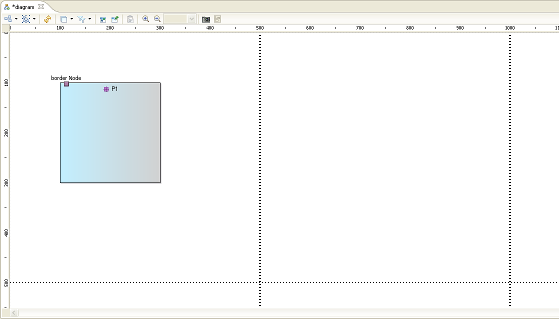

Expected behavior: the edge ends are aligned to the grid
Summary: If «Snap To Grid» property is enabled (in the «Rulers & Grid» tab of diagrams properties view), elements (node or edge) should be created on the grid.
| Version | Status | Date | Authors | Changes |
|---|---|---|---|---|
| v0.1 | DRAFT | 2014-05-22 | lredor | Initial version. |
| v0.2 | DRAFT | 2014-05-28 | lredor | Updates after team review. |
| v0.3 | PROPOSAL | 2014-06-11 | lredor | Add screenshots. |
| v0.4 | PROPOSAL | 2014-06-19 | lredor | Add ref to bugzilla 437544. |
| v0.5 | PROPOSAL | 2014-06-26 | lredor | Edge creation updates |
Relevant tickets:
If «Snap To Grid» property is enabled (in the «Rulers & Grid» tab of diagrams properties view), elements (node or edge) should be created on the grid.
Currently, with the «Snap To Grid» property enabled, with «Ruler Units»=Pixels and «Grid Spacing»=100, if you create a node by clicking on coordinates (125,125), the node is created to (125,125). It should be created to (100, 100), ie the nearest step grid.
This enhancement will not be available for sequence diagrams because «Snap To Grid» is not supported for this kind of diagram (see documentation for more explanations).
When «Snap To Grid» property is enabled, the moved elements are aligned on the grid but this is not the case during the creation. The goal of this enhancement is to have the same location if an element is moved on a point or created on this same point.
This enhancement is available for all kind of created elements: node, container and edge. You can refer to the section «Tests and Non-regression strategy/Test cases» for details of each cases to support.
The two classes org.eclipse.sirius.diagram.ui.tools.internal.palette.CreationTool and org.eclipse.sirius.diagram.ui.tools.internal.palette.ConnectionCreationTool should adapt the request location in updateTargetRequest() according to the «Snap To Grid» property state.
Limits:
org.eclipse.sirius.diagram.ui.tools.internal.palette.PaletteManagerImpl.updatePalette(Diagram)) but this is not the goal of this enhancement.The edge case is specific. Indeed, when the user clicks the first time (for source location), the best location depends on the second click (target location). So the real locations (source and target) are only computed after these 2 clicks (in org.eclipse.sirius.diagram.ui.graphical.edit.policies.SiriusGraphicalNodeEditPolicy.getConnectionCompleteCommand(CreateConnectionRequest)).

Default behavior: the anchors are aligned to the grid
But the end user is not aware of the anchors existence. So it is more user friendly to align the edge ends to the grid.
Expected behavior: the edge ends are aligned to the grid
During the analysis of this issue, bugs have been discovered. They should be ideally be fixed but it is not in the scope of this evolution.


There is no change in metamodel for this evolution.
This evolution does not change any API.
No user interface change.
This new behavior should be added in the New and Noteworthy documentation. There is no need to document this elsewhere because it became the default behavior.
Existing tests should be adapted to this new feature.
This chapter lists all different cases that should be tested for this enhancement.
Each above cases should be tested:
The container should be created on the nearest grid crossing.
Cases: Create a node on the diagram or in container.
The node should be created on the nearest grid crossing.
Cases:
The border node should be created on the nearest grid crossing, as close as possible. Indeed, one of the coordinates (x or y) is constrained by the parent border. The location is also constrained by other border nodes on the selected container.
For north and south border node, only the x axis grid crossing is considered (the y axis is fixed by the parent north, or south, border).
For east and west border node, only the y axis grid crossing is considered (the x axis is fixed by the parent east, or west, border).

The starting point and the ending point of the edge should be aligned on the grid crossing, as close as possible. Indeed, one of the coordinates (x or y) is constrained by the connected side of the source/target.

This is a particular case where border nodes and edge are created together with the same tool. The border nodes should be created as if they are created apart.

For all creation in a container with scroll, the node (border or not) is created according to global grid and not to a potential internal grid to the container. The scroll is not really considered in this case.
We should make attention to avoid any disturbing effect: after the node creation, the scroll bars should not be reset. Even if the scroll is not really considered, the node should be created on the closest grid crossing, but the real location is a scrolled one (current behavior), we have just to align the location to the global grid.
In case of a large grid spacing, it is possible that the grid does not cross the container. In this case, the coordinates are constrained by the bounds of the container and are set according to the nearest grid crossing.
If the centered in visible part creation (marked as known limitation) is finally needed, the impacted code will be in the method org.eclipse.sirius.diagram.ui.business.internal.view.SiriusLayoutDataManagerImpl.calculateCenterLocation(IGraphicalEditPart, CompoundCommand, IAdaptable, Point).